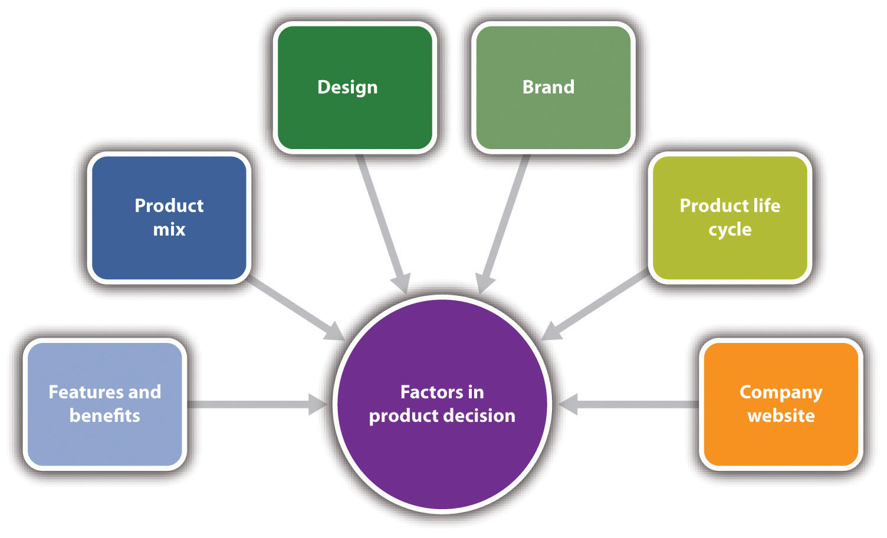
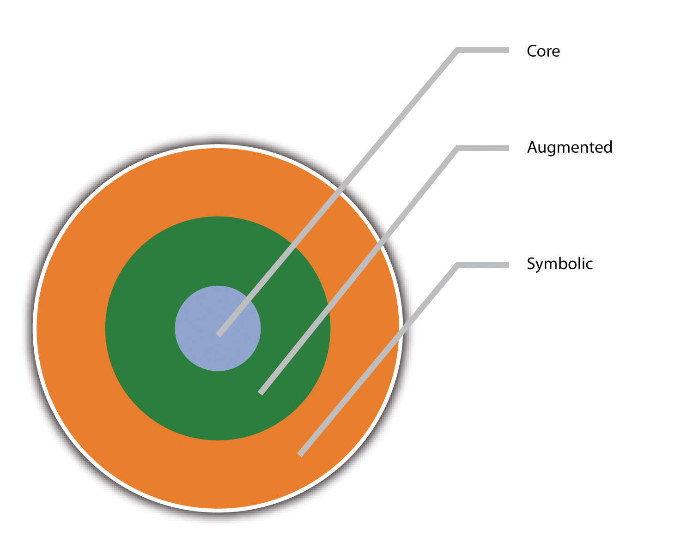
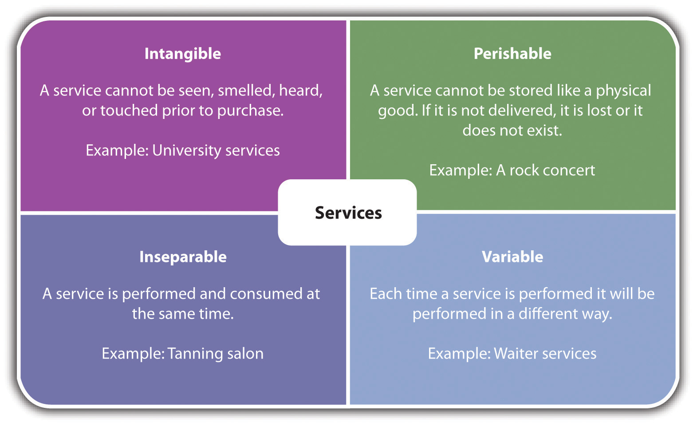

The key element in the marketing mix is the product. Without it, price, promotion, and place are moot. The same is true for marketing strategy. Fulfilling a company’s vision and mission and achieving its marketing objectives must be led by the product.
There are multiple decisions and considerations that factor into product or service development: features and benefits, product mix, design, brand, the product life cycle, and the company website. Knowing product development issues can be very helpful for even the smallest business that is looking to keep its current product line responsive to the customers while also looking to expand its product line as the company grows (if growth is desired).
Figure 7.2 Factors in Product or Service Decisions
A product has multiple layers: core, augmented, and symbolic. These three layers can help a small business owner understand the product features and benefits that will best deliver value to current and prospective customers. These layers also provide the bases for differentiating and positioning the product. The product layers refer to both products and services and business-to-consumer (B2C) or business-to-business (B2B) customers.
Figure 7.3 The Product Layers
The core layerThe nuts and bolts of a product, its physical anatomy, and its basic features. is the nuts and bolts of a product, its physical anatomy, and its basic features. It is also the basic benefit or problem solution that B2C or B2B customers are looking for. Someone buying an airline ticket, for example, is buying transportation.Dana-Nicoleta Lascu and Kenneth E. Clow, Essentials of Marketing (Mason, OH: Atomic Dog Publishing, 2007), 226. Someone buying an ice cream cone is buying a delicious and fun treat. The core layer is also where considerations of qualityOverall product quality, reliability, and the extent to which a product or a service meets consumers’ needs. begin. Quality “refers to overall product quality, reliability, and the extent to which [the product or the service] meets consumers’ needs,” and the perception of quality has the greatest impact on customer satisfaction.Dana-Nicoleta Lascu and Kenneth E. Clow, Essentials of Marketing (Mason, OH: Atomic Dog Publishing, 2007), 117. Decisions about design, manufacturing, preparation, ingredients, service delivery, component parts, and process materials all reflect a business’s philosophy about quality. The augmented layerWhere additional value is added via things such as packaging, promotion, warranties, guarantees, brand name, design, financing opportunities where appropriate, prompt and on-time service, and additional services that may enhance a product. is where additional value is added via things such as packaging, promotion, warranties, guarantees, brand name, design, financing opportunities where appropriate, prompt and on-time service, and additional services that may enhance a product. The augmented layer for Southwest Airlines is its well-known brand name, its packaging and promotion as a “fun” flying experience, and its “bags fly free” policy. The ice cream cone that is purchased in an old-fashioned ice cream parlor will likely be considered of greater value to many customers than the ice cream cone purchased at a Dairy Queen. It is this layer where many marketing mistakes are made because opportunities are missed. The symbolic layerThe meaning of a product to a consumer—its emotional and psychological connections. captures the meaning of a product to a consumer—its emotional and psychological connections. There are many loyal customers of Southwest Airlines because they really enjoy flying with them. It is inexpensive, convenient, and fun. The old-fashioned ice cream parlor will engender nostalgia and create powerful emotional ties. The most serious marketing errors are made when the symbolic product layer is either ignored or not understood. The power of symbolism should never be underestimated.
Every small business should look at its products within the context of the product layers. It is the creativity and imagination of the small business owner with the product layers that can set a business apart. They provide an excellent basis for dissecting an existing product to see where opportunities may have been missed, features could be added or changed, and features or enhancements could be explained more effectively in promotional activities. The product layers should also be used to develop new products that the business plans to introduce.
All small businesses have a product mix, the selection of products or services that is offered to the marketplace. With respect to the product mix for small companies, a company will usually start out with a limited product mix. However, over time, a company may want to differentiate products or acquire new ones to enter new markets. A company can also sell existing products to new markets by coming up with new uses for its products.Rick Suttle, “What Is a Product Mix?,” Chron.com, accessed December 1, 2011, smallbusiness.chron.com/product-mix-639.html. No matter the approach, the product mix needs to be created so that it is responsive to the needs, wants, and desires of the small business’s target market.
For small businesses engaged in e-marketing, product selection is a key element for online success. Part of the challenge is deciding which products to market online because some products sell better online than others.Jan Zimmerman, Web Marketing for Dummies, 2nd ed. (Hoboken, NJ: Wiley, 2009), 101. If a business has a brick-and-mortar presence, a decision must be made whether all the inventory or only part of it will be sold online. Items that sell well online change over time, so it is important to keep up to date on the changes.Jan Zimmerman, Web Marketing for Dummies, 2nd ed. (Hoboken, NJ: Wiley, 2009), 101. A second decision to be made is the number of items in the catalog (i.e., the number of items you will sell). Given intense online competition and shoppers’ desires for good selections, there needs to be a critical mass of products and choices—unless a company is lucky enough to have a very narrow niche with high demand. If a company has only one or two products to sell, the situation should be evaluated to determine whether selling online will be profitable.Jan Zimmerman, Web Marketing for Dummies, 2nd ed. (Hoboken, NJ: Wiley, 2009), 101–2.
In his book, Re-imagine! Business Excellence in a Disruptive Age,Tom Peters, Re-imagine! Business Excellence in a Disruptive Age (London: Dorling Kindersley Limited, 2003), 132–46. Tom Peters devotes two chapters to the importance of design to business success. He says that design is “the principal reason for emotional attachment (or detachment) relative to a product service or experience”—and he quotes Apple’s CEO, Steve Jobs, in saying that design is the “fundamental soul of a man-made creation.”Tom Peters, Re-imagine! Business Excellence in a Disruptive Age (London: Dorling Kindersley Limited, 2003), 132–146, as cited in Bob Lamons, “Strong Image Design Creates Passion for Firm, Its Products,” Marketing News, April 15, 2005, 7. This is true whether the product comes from a big business or a small business.
Product designAesthetic properties such as color, shape, texture, and entire form plus a consideration of ergonomics, technology, and usability as well as touch, taste, smell, sight, and sound. involves aesthetic properties such as color, shape, texture, and entire form, but it also includes a consideration of function, ergonomics, technology, and usabilityDana-Nicoleta Lascu and Kenneth E. Clow, Essentials of Marketing (Mason, OH: Atomic Dog Publishing, 2007), 242; Dominic Donaldson, “The Importance of Good Product Design,” Artipot, December 8, 2008, accessed December 1, 2011, www.artipot.com/articles/246078/the -importance-of-good-product-design.htm. as well as touch, taste, smell, sight, and sound. The pulling together of these things, as appropriate to the specific product or service being designed, should result in a design that matches customer expectations. “Design represents a basic, intrinsic value in all products and services.”Ted Mininni, “Design: The New Corporate Marketing Strategy,” MarketingProfs, November 5, 2005, accessed December 1, 2011, www.marketingprofs.com/articles/2005/1670/design-the-new-corporate-marketing-strategy.
Design offers a powerful way to differentiate and position a company’s products and services, often giving company a competitive edge.Philip Kotler and Kevin Lane Keller, Marketing Management (Upper Saddle River, NJ: Pearson Prentice Hall, 2009), 325. Improved profit margins from increased sales and increased market share are often the result. It is essential to get the visual design of a product right for the market you are appealing to. It can make the difference between selling a product—or not.Dominic Donaldson, “The Importance of Good Product Design,” Artipot, December 8, 2008, accessed December 1, 2011, www.artipot.com/articles/246078/the -importance-of-good-product-design.htm.
Design is particularly important in making and marketing retail services, apparel, packaged goods, and durable equipment. The designer must figure out how much to invest in form, feature development, performance, conformance, durability, reliability, repairability, and style. To the company, a well-designed product is one that is easy to manufacture and distribute. To the customer, a well-designed product is one that is pleasant to look at and easy to open, install, use, repair, and dispose of. The designer must take all these factors into account.
The arguments for good design are particularly compelling for smaller consumer products companies and start-ups that do not have big advertising dollars.Philip Kotler and Kevin Lane Keller, Marketing Management (Upper Saddle River, NJ: Pearson Prentice Hall, 2009), 325.
Quirky.com is a small business that has taken product design to a whole new level: collaboration. First seen as a “bold but ultimately wild-eyed idea,”Cliff Kuang, “Product-Design Startup Quirky Gets $6 Million in VC Funding,” Fast Company, April 7, 2010, accessed December 1, 2011, www.fastcompany.com/1609737/product-design-startup-quirky-gets-6-million-in-vc-funding. Quirky recently secured $6 million in venture financing. Check out how they operate in Note 7.42 "Video Clip 7.5". A company like this could be very helpful to a small business that is looking to introduce a new product.
Quirky’s Ben Kaufman on Innovation
(click to see video)An innovative approach to product design: collaboration.
Design issues also apply to services. Some of the design issues for services that are delivered in a store (e.g., dry cleaning, repair, and restaurant) are the same as for any retail store: the design of the physical space, the appearance of the personnel, the helpfulness of the personnel, the ease of ordering, and the quality of service delivery. For services that are performed at a customer’s home or at a business site, the design issues include timeliness; the appearance and helpfulness of personnel; the quality of installation, service, and repair; and the ease of ordering the service. The special characteristics of services (i.e., intangibilityA service cannot be seen, smelled, heard, tasted, or touched prior to purchase., perishabilityA service cannot be stored like a physical good., inseparabilityA service is performed and consumed at the same time., and variabilityEach time a service is performed, it will be performed in a different way., as defined in Figure 7.4 "The Characteristics of Services") present design challenges that are different from those faced by physical products.
Figure 7.4 The Characteristics of Services
Source: Adapted from Dana-Nicoleta Lascu and Kenneth E. Clow, Essentials of Marketing (Mason, OH: Atomic Dog Publishing, 2007), 264–68.
Whether a small business is offering a product, a service, or a combination of the two to either the B2C or B2B marketplace, there is no question that excellent product design is a gateway to business success.
The design of the product or the service package is another decision component of the product. PackagingAll the activities of designing and producing the container for a product. can be defined as “all the activities of designing and producing the container for a product.”Philip Kotler and Kevin Lane Keller, Marketing Management (Upper Saddle River, NJ: Pearson Prentice Hall, 2009), 239. Packages “engage us consciously and unconsciously. They are physical structures but at the same time they are very much about illusion. They appeal to our emotions as well as to our reason.”Randall Frost, “Packaging Your Brand’s Personality,” Brandchannel, October 3, 2005, accessed December 1, 2011, www.brandchannel.com/features_effect.asp?pf_id =283. Thus the package communicates both emotional and functional benefits to the buyer, and it can be a powerful means of product differentiation. A well-designed package can build brand equity and drive sales.Philip Kotler and Kevin Lane Keller, Marketing Management (Upper Saddle River, NJ: Pearson Prentice Hall, 2009), 339. A poorly designed package can turn the customer off and can lead to wrap rage—the anger and frustration that results from not being able to readily access a product, which often leads to injuries (see Note 7.48 "Video Clip 7.6"). Although difficult-to-open packaging may be seen as necessary by the manufacturers and retailers, it does not do much for a positive customer experience.
Opening Plastic Clamshells with a Can Opener
(click to see video)Plastic clamshell packages inspire wrap rage. They are easier to open if you start with a can opener.
A brandA name, term, sign, symbol, or design, or a combination of them, intended to identify the goods or the services of one seller or a group of sellers and to differentiate them from those of competitors. is defined by the American Marketing Association as “a name, term, sign, symbol, or design, or a combination of them, intended to identify the goods or services of one seller or group of sellers and to differentiate them from those of competitors…A brand may identify one item, a family of items, or all items of that seller. If used for the firm as a whole, the preferred term is trade name.”“Brand,” American Marketing Association, accessed December 1, 2011, www.marketingpower.com/_layouts/Dictionary.aspx?dLetter=B. A brand is a promise to the consumer that certain expectations will be met, a promise that—if broken—may result in the loss of that customer. A company’s brand is probably its most important asset.
Building a brand is an ongoing process for a small business because it wants a memorable identity. It is important for the business to constantly monitor its brand to ensure that it represents the core values and needs of its existing and potential customers.Miranda Brookins, “How to Brand a Business,” Chron.com, accessed December 1, 2011, smallbusiness.chron.com/brand-business-211.html. The brand needs to reach people on an emotional levelMarc Gobe, Emotional Branding: The New Paradigm for Connecting Brands to People (New York: Allworth Press, 2001), xv. because customers ultimately make decisions on an emotional level, not a logical level. For this reason, a small business should think in terms of tapping into as many senses as possible with its brand. “Almost our entire understanding of the world is experienced through our senses. Our senses are our link to memory and can tap right into emotion.”Martin Lindstrom, Brand Sense: Build Powerful Brands through Touch, Taste, Smell, Sight, and Sound (New York: Free Press, 2005), 10. Scenting the air of a store with a fresh fragrance could be a powerful contributor to the store’s brand.
Whether a small business wants to keep its brand (but may be monitoring it) or is looking to rebrandChanging the brand. (changing the brand), there are four fundamental qualities of great brands that should be kept in mind:Adapted from Patrick Barwise and Sean Meehan, “The One Thing You Must Get Right When Building a Brand,” Harvard Business Review, December 2010, 80–84.
The ultimate objective is to have a brand that delivers a clear message, is easy to pronounce, confirms a company’s credibility, makes an emotional connection with the target market, motivates the buyer, and solidifies customer loyalty.Laura Lake, “What Is Branding and How Important Is It to Your Marketing Strategy?,” About.com, accessed December 1, 2011, marketing.about.com/cs/brandmktg/a/whatisbranding.htm; Dana-Nicoleta Lascu and Kenneth E. Clow, Essentials of Marketing (Mason, OH: Atomic Dog Publishing, 2007), 230.
Good Branding Will Build a Company
(click to see video)A strong branding and marketing strategy is an investment that will pay dividends for years to come.
Small Business Branding Tips
(click to see video)A small business owner talks about the importance and mechanisms of creating a strong and memorable company brand.
Every product has a life span. Some are longer than others. The pet rock had a very short life span. The automobile is still going strong. Some products or services experience an early death, not able to make it very far out the door. Take, for example, Colgate Kitchen Entrees (yes, as in the toothpaste); Cosmopolitan Yogurt (off the shelves in eighteen months); and Ben-Gay Aspirin (the idea of swallowing Ben-Gay was not a winner).“Top 25 Biggest Product Flops of All Time,” Daily Finance, accessed December 1, 2011, www.dailyfinance.com/photos/top-25-biggest-product-flops-of-all-time.
Even the big guys make mistakes, so small businesses are not immune from product goofs. The products that do make it, however, go through what is known as the product life cycle (PLC)The performance of a product in terms of sales and profits over time., defined as “the performance of the product in terms of sales and profits over time.”Dana-Nicoleta Lascu and Kenneth E. Clow, Essentials of Marketing (Mason, OH: Atomic Dog Publishing, 2007), 244. The traditional PLC is shown in Figure 7.5 "The Traditional Product Life Cycle".
Figure 7.5 The Traditional Product Life Cycle

Source: “The Product Life Cycle,” NetMBA, accessed December 2, 2011, http://www.netmba.com/marketing/product/lifecycle.
Small-business owners should understand the PLC because there are specific implications for marketing strategy. The product development (incubation) stageWhen a product is being prepared for sale. is when a product is being prepared for sale. There are costs but no sales. The product introduction stageWhen a product is available to buy for the first time. is when a product is available to buy for the first time. Sales will generally be low but increasing, marketing expenses will be high, and profits will be typically low or nonexistent. The focus of the marketing strategy will be to create awareness, establish a market, and create demand for the product.Philip Kotler and Kevin Lane Keller, Marketing Management (Upper Saddle River, NJ: Pearson Prentice Hall, 2009), 339; Dana-Nicoleta Lascu and Kenneth E. Clow, Essentials of Marketing (Mason, OH: Atomic Dog Publishing, 2007), 244; Kristie Lorette, “How Would the Marketing Mix Change at Different Stages of the Product Life Cycle?,” Chron.com, accessed December 1, 2011, smallbusiness.chron.com/would-marketing-mix-change-different-stages-product-life-cycle-3283.html. The product growth stageWhen sales grow rapidly as the target market adopts a product and competition enters the marketplace once it observes the success. is when sales grow rapidly as the target market adopts a product and competition enters the marketplace once it observes the success. Marketing strategy should focus on differentiation and building a brand preference. There is substantial profit improvement.Philip Kotler and Kevin Lane Keller, Marketing Management (Upper Saddle River, NJ: Pearson Prentice Hall, 2009), 339; Dana-Nicoleta Lascu and Kenneth E. Clow, Essentials of Marketing (Mason, OH: Atomic Dog Publishing, 2007), 244; Kristie Lorette, “How Would the Marketing Mix Change at Different Stages of the Product Life Cycle?,” Chron.com, accessed December 1, 2011, smallbusiness.chron.com/would-marketing-mix-change-different-stages-product-life-cycle-3283.html. Rapid growth must be managed carefully so that the company does not succeed into failure. The product maturity stageCharacterized by slow growth because most of the buyers interested in a product have bought it. is characterized by slow growth because most of the buyers interested in a product have bought it. Sales may increase but slowly due to intense price competition. Profits stabilize or decline. The marketing strategy must focus on getting people to switch brands by using special promotions and incentives.Philip Kotler and Kevin Lane Keller, Marketing Management (Upper Saddle River, NJ: Pearson Prentice Hall, 2009), 339; Dana-Nicoleta Lascu and Kenneth E. Clow, Essentials of Marketing (Mason, OH: Atomic Dog Publishing, 2007), 244; Kristie Lorette, “How Would the Marketing Mix Change at Different Stages of the Product Life Cycle?,” Chron.com, accessed December 1, 2011, smallbusiness.chron.com/would-marketing-mix-change-different-stages-product-life-cycle-3283.html. The product decline stageWhen sales decline and profits erode. is when sales decline and profits erode. A product has become obsolete because of an innovation (think VHS to DVD to Blu-Ray) or the tastes of the target market have changed. The marketing strategy works to reinforce the brand image of the product. The product may be dropped from the product line or rejuvenated if possible and practical.
There are many small business owners who may not see the PLC as applying to their products or services. After all, accounting services are accounting services, a luncheonette is a luncheonette, and hardware is hardware. Thinking this way would be a mistake. Accounting practices change, people’s tastes change, hardware solutions change, and government regulation inserts itself. What is successful today may not be successful tomorrow. The PLC provides guidance for watching how a product or a service progresses in the marketplace so that the necessary marketing strategy steps can be taken.
If the development of a new product is being considered, the following steps are suggested as guidance:
A company’s website is part of its product or service. The conventional wisdom is that all businesses should have a website. The reality is that there are many small businesses that do very well for themselves without a web presence. The small local deli, accounting or insurance services, a legal firm, a liquor store, or a dental office may not see the need for a website. At the same time, customers are increasingly expecting a web presence, so any small business that does not have a website runs the risk of losing sales because of it. The time may also be approaching when not having a website will be perceived as odd, with questions raised as to the seriousness of the business. Every small business without a website should determine whether this matters to them or not.
This section about the company website is targeted to the small business that has a web presence already or is planning to have one. A small business owner should have a basic understanding of website design to contribute to the discussion and communicate effectively when working with professionalsEfraim Turban et al., Electronic Commerce: A Managerial Perspective (Upper Saddle River, NJ: Pearson Prentice Hall, 2008), 751.—as well as to organize the owner’s visceral reaction when it is time to evaluate other websites, plan the company’s website, or revise the company’s current website.Jan Zimmerman, Web Marketing for Dummies, 2nd ed. (Hoboken, NJ: Wiley, 2009), 67. In addition, any commitment to e-marketing requires a website.
Stanford University’s Persuasive Technology Lab found that people quickly evaluate a website by visual design alone, with the visual design setting the tone for the user’s experience.Lorrie Thomas, Online Marketing (New York: McGraw-Hill, 2011), 22–23. “Image is everything online. Good design evokes trust, makes navigation clear, establishes branding, appeals to target customers, and makes them feel good about doing business with the website they are on. Design does not have to be expensive for it to work. It does, however, need to represent an organization and appeal to a visitor. Professional design is not something organizations spend money on; it is something they invest in to support trust, positioning, and long-term marketing” (emphasis added).Lorrie Thomas, Online Marketing (New York: McGraw-Hill, 2011), 23.
This section of the chapter discusses website objectives and the fundamental design elements: layout, color, typography, graphics, interactivity, navigation, usability, content, and performance. User experience is also discussed.
Top Web Design Mistakes Small and Large Businesses Make
(click to see video)Four mistakes that small businesses should watch for when designing their websites.
“The goal of any Web site is to deliver quality content to its intended audience and to do so with an elegant design.”Efraim Turban et al., Electronic Commerce: A Managerial Perspective (Upper Saddle River, NJ: Pearson Prentice Hall, 2008), 751. Website objectivesWhat a company wants its website to do. define what a company wants its website to do. For example, a website can build awareness of the business; build awareness of particular brands or services; distribute information to supporters, customers, and stakeholders on products or issues; sell products or services; build relationships with customers; develop a new marketing strategy or reinforce an existing strategy; manage an event (e.g., online registration and payment); build the company image; and gather marketing research by collecting data from users or conducting online surveys.“What Are the Objectives of Your Web Site?,” 3w designs, accessed December 1, 2011, www.3w-designs.co.uk/textonly/new-web-site-aims.html. Whichever objective or combination of objectives is chosen, each objective should meet the criteria discussed in Section 7.2 "The Marketing Strategy Process". Clear-cut objectives will increase the chances that a company’s website design and content will work to achieve those objectives.Ottavio Storace, “How to Build a Web Site That Achieves Objectives,” Webmaster Resources @ Suite 101, July 13, 2009, accessed December 1, 2011.
LayoutThe positioning of the various elements that comprise a web page. refers to the positioning of the various elements that comprise a web page: where each text object will be positioned on each page or screen, the width and length of columns, the amount of space that will be placed between the lines of text, the alignment to be used (e.g., left or right), whether the page will be text only or use more advanced designs (e.g., multiple columns),“Glossary of Web Terminology: Website Layout,” April 5, 2010, accessed January 24, 2012, www.azurewebdesign.com/glossary-of-web-terminology; Sue A. Conger and Richard O. Mason, Planning and Designing Effective Web Sites (Cambridge, MA: Course Technology, 1998), 96. and the placement of graphics. Layout is important because it is one of the first things a visitor perceives when landing on a website. Research shows that “web users spend 69% of their time viewing the left half of the page and 30% viewing the right half, [so] a conventional layout is thus more likely to make sites profitable.”Jakob Nielsen, “Horizontal Attention Leans Left,” Useit.com, April 6, 2010, accessed December 1, 2011, www.useit.com/alertbox/horizontal-attention.html.
Color is a powerful component of design. It affects mood and emotion, and it evokes associations with time and place. For example, psychedelic color combinations take us back to the 1960s, and turquoise and yellow combinations remind us of art deco in the 1950s. For websites, color is important in defining a site’s environment because “people see color before they absorb content.”“Welcome to Color Voodoo Publications,” Color Voodoo, accessed December 1, 2011, www.colorvoodoo.com. A lasting color impression occurs within ninety seconds and accounts for 60 percent of acceptance. What are the implications for website design? Decisions regarding color can be highly important to success.
The key to the effective use of color in website design is “to match the expectations of the target audience. Financial services sites tend to use formal colors (e.g., green or blue) with simple charts to illustrate the text but not many pictures. Sites directed at a female audience tend to feature lighter colors, usually pastels, with many pictures and an open design featuring lots of white space. Game sites are one type of site that can get away with in-your-face colors, Flash effects, and highly animated graphics.”Efraim Turban et al., Electronic Commerce: A Managerial Perspective (Upper Saddle River, NJ: Pearson Prentice Hall, 2008), 751.
Colors should be selected that reflect the purpose of the site and enhance the design. Understanding the meaning of color and the cultural use of color and how colors interact is important in website design to convey the right tone and message and evoke the desired response to the site.Jacci Howard Bear, “The Meaning of Color,” About.com, accessed December 1, 2011, desktoppub.about.com/od/choosingcolors/p/color_meanings.htm?p=1. The wrong choice could adversely affect a visitor’s experience at the site,Joanne Glasspoole, “Choosing a Color Scheme,” Metamorphosis Design, accessed December 1, 2011, www.metamorphozis.com/content_articles/web_design/Choosing_A_Color_Scheme.php. which could adversely affect a company’s sales and image.
Color Psychology in Web Design
(click to see video)Insights into color and its importance in website design.
“The following list provides the traditional meanings of common colors and suggests compatible business usage:
“TypographyThe use of typefaces (or fonts) in a design. is the art of designing a communication by using the printed word.”Colin Wheildon, Type & Layout: How Typography and Design Can Get Your Message Across—or Get in the Way (Berkeley, CA: Strathmoor Press, 1996), 19. More specifically, it is the use of typefaces (or fonts)A specific type or font. in a design. Typeface refers to a particular type or font (e.g., Times New Roman and Arial). Typography is an integral part of web design and plays a role in the aesthetics of the website.Shannon Noack, “Basic Look at Typography in Web Design,” Six Revisions, April 7, 2010, accessed December 1, 2011, sixrevisions.com/web_design/a-basic -look-at-typography-in-web-design. About 95 percent of the information on the web is written language, so it is only logical that a web designer should understand the shaping of written information (i.e., typography).Oliver Reichenstein, “Web Design Is 95% Typography,” Information Architects, Inc., October 19, 2006, accessed December 1, 2011, www.informationarchitects.jp/en/the-web-is-all-about-typography-period. It is possible to blow away more than 50 percent of website visitors and readers by choosing the wrong typeface.Colin Wheildon, Type & Layout: How Typography and Design Can Get Your Message Across—or Get in the Way (Berkeley, CA: Strathmoor Press, 1996), 19.
GraphicsPictures, artwork, animations, or videos., defined as pictures, artwork, animations, or videos, can be very effective if used correctly. Graphics can provide interest, information, fun, and aesthetics, but they can also take forever to load, be meaningless or useless, not fit on the screen, and use colors that are not browser safe colorsColors that look the same on PC and Macintosh operating systems. (i.e., colors that look the same on PC and Macintosh operating systems). Images enhance a web page, but they should be selected and placed carefully.
Graphics should be used to “convey the appropriate tone of your message. As the old saying goes, a picture is worth a thousand words. Make sure your images correspond to the text and are appropriate to the business you offer. For example, an audiologist shouldn’t use a picture of a woman holding her glasses because the spotlight should be on hearing.”Lena Claxton and Alison Woo, How to Say It: Marketing with New Media (New York: Prentice Hall, 2008), 35. Graphics should also help create a mood, or a sense of place. The use of the graphics has to be thoroughly considered because they slow the loading of a website.“When to Use Graphics on Your Website,” Improve the Web, May 9, 2007, accessed December 1, 2011, www.improvetheweb.com/when-use-graphics-your-site.
It has been shown that quality images boost sales and enhance the visitor experience. “Consumers who browse products on websites want to see the products they’re considering for purchase represented by the highest quality image possible…People do not buy what they cannot see, so the higher the quality and resolution of [the] imagery, the better [the] results will be.”Dave Young, “Quality Images Boost Sales,” Practical eCommerce, March 14, 2007, accessed December 1, 2011, www.practicalecommerce.com/articles/436-Quality -Images-Boost-Sales. The key for any small business that wants graphics on its website is to consider how the graphics will add value to the user experience. The graphics should be for the direct benefit of the user, not the business. Do not get carried away with lots of images and animations because they can make a web page very hard to read. Graphics are a major part of the design, not just afterthoughts.Jennifer Kyrnin, “Basics of Web Layout,” About.com, accessed December 1, 2011, webdesign.about.com/od/layout/a/aa062104.htm.
People will not use a website if they cannot find their way around it. If web users cannot find what they are looking for or figure out how the site is organized, they are not likely to stay long—or come back.Steve Krug, Don’t Make Me Think: A Common Sense Approach to Web Usability (Berkeley, CA: New Riders Publishing, 2000), 51. “The purpose of site navigationThe design to help visitors quickly and easily find the information they need on a website. is to help visitors quickly and easily find the information they need on a website. Among the questions considered in site navigation are, How will visitors enter a site? How will visitors use the site? How will they find out what is available at the site? How will they get from one page to another and from one section to another? How will visitors find what they are looking for?”Efraim Turban et al., Electronic Commerce: A Managerial Perspective (Upper Saddle River, NJ: Pearson Prentice Hall, 2008), 754.
Site navigation must be easy, predictable, consistent, and intuitive enough so that visitors do not have to think about it.Efraim Turban et al., Electronic Commerce: A Managerial Perspective (Upper Saddle River, NJ: Pearson Prentice Hall, 2008), 754. “Designing effective navigation can also entice your visitors to try out the other things you offer on your site.”“Website Navigation Tips,” Entheos, accessed December 1, 2011, www.entheosweb.com/website_design/website_navigation_tips.asp. The key to understanding navigation is to realize that if it is too hard to use or figure out, web visitors will be gone in a nanosecond, perhaps never to be seen again. What does this mean to a small business? Lost sales and lost opportunities.
A website’s usabilityA website’s ease of use., or ease of use, “can make or break an online experience, and it is directly correlated to the success of the site.”Lorrie Thomas, Online Marketing (New York: McGraw-Hill, 2011), 38. Website usability measures the quality of a user’s experience when interacting with a website,“Usability Basics,” Usability.gov, accessed December 1, 2011, www.usability.gov/basics/index.html. and it works hand in hand with site navigation. According to usability.gov, usability is a combination of five factors:“Usability Basics,” Usability.gov, accessed December 1, 2011, www.usability.gov/basics/index.html.
Usability is necessary for survival on the Internet. If a website is difficult to use, people will leave,Efraim Turban et al., Electronic Commerce: A Managerial Perspective (Upper Saddle River, NJ: Pearson Prentice Hall, 2008), 756. and they may be inclined to tell everyone they know on Facebook and Twitter about their negative experiences. It is as simple—and as serious—as that. Small-business owners should consider postlaunch usability testing to help ensure the best user experience. Three free tools are HubSpot’s Website Grader, SiteTuners, and Google Analytics.
Site interactivityThings on a company’s website site that prompt some kind of action from visitors. is about things on a company’s website site that prompt some kind of action from visitors.“Web Development Glossary for Small Businesses,” Lightwave Communications, accessed December 1, 2011, www.lightwavewebdesign.com/web-development -glossary/website-glossary-g-i.html. Visitors become engaged with the site, they stay longer, they look deeper into the site to see what the company is offering, they are less likely to jump to another site, and they feel that they are part of a community and connected. This will keep them coming back to the site.Folusho Orokunie, “Do Not Make Your Website Visitors Yawn! Make Your Site Interactive,” accessed December 1, 2011, folusho.com/do-not-make-your-website-visitors -yawn-make-your-site-interactive.
There are many ways in which a small business can provide interactivity on its site. The following are some examples:“Examples of Possible Interactive Features on Your Website,” Zamba, accessed December 1, 2011, www.zambagrafix.com/interact.htm; “Importance of Web Interactivity: Tips and Examples, Hongkiat.com, accessed December 1, 2011, www.hongkiat.com/blog/importance-of-web-interactivity-tips-and-examples.
The sources of interactivity on a website are limited only by a small business owner’s creativity and, of course, budget. However, it should never be a question of saying yes or no to interactivity. It is a matter of how much, what kind, and where. Remember that when customers feel compelled to do something, they are that much closer to buying.“Importance of Interactive Websites,” Thunder Data Systems, accessed December 1, 2011, www.thunderdata.com/thunder_bits/importance_of_interactive_websites .html.
ContentAll the words, images, products, sound, video, interactive features, and any other material that a business puts on its website. refers to all the words, images, products, sound, video, interactive features, and any other material that a business puts on its website.Efraim Turban et al., Electronic Commerce: A Managerial Perspective (Upper Saddle River, NJ: Pearson Prentice Hall, 2008), 744; Jan Zimmerman, Web Marketing for Dummies, 2nd ed. (Hoboken, NJ: Wiley, 2009), 67. It is the content that visitors are looking for, and it is what will keep them on the site. High-quality content will also keep people interested so that they come back for more. “A poorly and ineffectively ‘written’ website has an adverse impact on the efficiency of the website. Moreover, it also gives a negative impression of the brand [or company] behind it. Without good ‘content’ a website is an empty box.”JPDC, “The Importance of Visitor-Oriented Online Content on Your Website,” Mycustomer.com, June 12, 2009, accessed December 1, 2011, www.mycustomer.com/blogs/marketingadvisor/marketing-advisor/importance-visitor-oriented-online -content-your-website.
Good content is relevant, customer-centric (i.e., it is written in the language and words of the target audience(s) that visit the website), and complies with what we know about how people read online content. They don’t. They scan it—because it takes 25 percent longer to read the same material online than it does to read it on paper.Jan Zimmerman, Web Marketing for Dummies, 2nd ed. (Hoboken, NJ: Wiley, 2009), 73. If a company’s content does not fit its target audience(s), the website will not generate good results.JPDC, “The Importance of Visitor-Oriented Online Content on Your Website,” Mycustomer.com, June 12, 2009, accessed December 1, 2011, www.mycustomer.com/blogs/marketingadvisor/marketing-advisor/importance-visitor-oriented-online -content-your-website.
Most small businesses may think that they must generate all website content. However, some of the best and most successful content may be the easiest to create: the content generated by website users. Interestingly, it is not uncommon for user-generated content to get higher search engine rankings than a business’s home page, not an insignificant fact.Lorrie Thomas, Online Marketing (New York: McGraw-Hill, 2011), 55. User-generated content includes the following:Lorrie Thomas, Online Marketing (New York: McGraw-Hill, 2011), 55.
The gold standard of user-generated content is customer reviews. Customer reviews can increase site traffic by as much as 80 percent, overall conversions by 60 percent, and the average order value by 40 percent. With respect to the posting of both positive and negative reviews, it has been shown that “users trust organizations that post both negative and positive reviews of their product if organizations address the feedback constructively.”Lorrie Thomas, Online Marketing (New York: McGraw-Hill, 2011), 56.
There are many factors that will contribute to the success of a small business website. However, the website will not do as well as it should, and it will not reach its full potential, without good quality content.“Content Is King—Good Content Holy Grail of Successful Web Publishing,” The Media Pro, August 14, 2010, accessed December 1, 2011, www.themediapro.com/earn-sleeping/content-is-king-holy-grail-of-successful-web-publishing.
The Value of the About Page
Why the “About” page is so important to a business website.
videos.smallbusinessnewz.com/2011/01/26/the-value-of-the-about-page
How a website displays products will impact the success of the website. As a result, product display should be seen as a website design issue. Key decisions that should be made for each category of product that is available on the website include the choice of which products to feature, how to provide product detail pages (an individual page for each product is preferable because there is more room for product details), the sort options that will be available to the shopper (e.g., price), and where items on special will be placed on the page (the upper right corner is recommended).Jan Zimmerman, Web Marketing for Dummies, 2nd ed. (Hoboken, NJ: Wiley, 2009), 103.
No matter how well designed a website is, and no matter how high the quality of content, a website that takes too long to load will lose visitors. A website’s loading speedHow fast the pages respond to a user request. determines how fast the pages respond to a user request. Faster site speed is preferred by the users who want an optimal browsing experience, and the small business that wants increasing incoming connections and high sales. Users want faster speeds.“Google Finally Sets the Record Straight: Website Speed Is a Legit Search Ranking Factor,” Linkbuilding.net, June 13, 2010, accessed December 1, 2011, linkbuilding.net/2010/06/13/google-finally-sets-the-record-straight-website-speed-is-a-legit -search-ranking-factor.
Visiting a fast-loading site is a pleasant experience. Visiting a slow-loading site is not. Surveys now show that a person will wait less than three seconds (perhaps even less) for a webpage to load before leaving, with a one-second delay possibly meaning a 7 percent reduction in sales.Imad Mouline, “Is Your Website Fast Enough for Your Customers?,” CNN Money, August 27, 2010, accessed June 1, 2012, http://tech.fortune.cnn.com/2010/04/27/is-your-website-fast-enough-for-your-customers/#more-24083. Google claims that the amount of site traffic drops by 20 percent for every 0.5 seconds of load time.“Improving Site Speed and Load Times,” Optimum7.com, April 6, 2010, accessed December 1, 2011, www.optimum7.com/internet-marketing/website-speed/improving-site-speed-and-load-time.html.
There are several factors that slow down the loading time for a website, not the least of which is the connection speed of the user’s computer. This is out of the control of the web designer and the site owner (the small business). The biggest culprit, however, is a large graphic or several small graphics on a single page.Efraim Turban et al., Electronic Commerce: A Managerial Perspective (Upper Saddle River, NJ: Pearson Prentice Hall, 2008), 755. There are ways around this, known by any credible website designer. The impact of “slow down” features should be tested before the site launches and monitored afterwards.Imad Mouline, “Is Your Website Fast Enough for Your Customers?,” CNN Money, August 27, 2010, accessed June 1, 2012, http://tech.fortune.cnn.com/2010/04/27/is-your-website-fast -enough-for-your-customers/#more-24083. The small business owner can take advantage of some of the popular tools that are available, usually for free, to measure a company’s website speed: YSlow (a Firefox extension); Google Page Speed (a Firefox add-on); or Webmaster Tools.“Google Finally Sets the Record Straight: Website Speed Is a Legit Search Ranking Factor,” Linkbuilding.net, June 13, 2010, accessed December 1, 2011, linkbuilding.net/2010/06/13/google-finally-sets-the-record-straight-website-speed-is-a-legit -search-ranking-factor; “Improving Site Speed and Load Times,” Optimum7.com, April 6, 2010, December 7, 2011, www.optimum7.com/internet-marketing/website -speed/improving-site-speed-and-load-time.html. Once the problem areas have been identified, steps can be taken to make improvements. The goal is to have an interesting and speedy site.
For each of the following, describe the core, augmented, and symbolic layers.